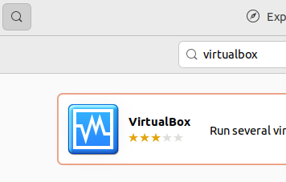
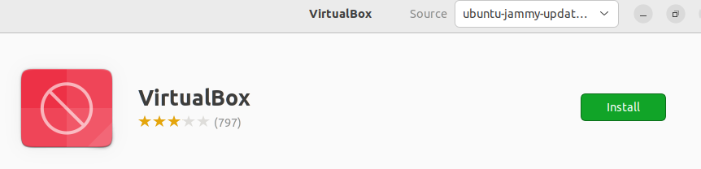
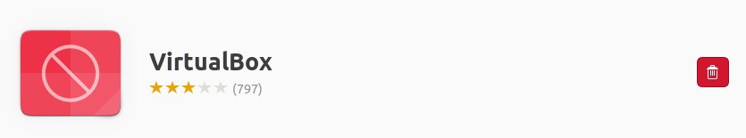
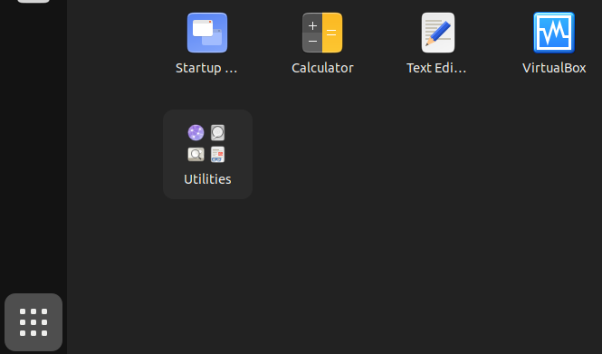

We believe security software like Whonix needs to remain Open Source and independent. Would you help sustain and grow the project? Learn more about our 14 year success story and maybe DONATE!
Template:Iso writer installation linux
Select your Linux distribution to get matching installation instructions.
Ubuntu
- Choose below how you want to install the utility.
- In Ubuntu, the package is named
gnome-disk-utility.

Command Line
Install package(s) gnome-disk-utility following these
instructions:
1 Platform specific notice.
- Non-Qubes-Whonix: No special notice.
- Qubes-Whonix: In Template.
2
 Update the package lists and upgrade the system.
Update the package lists and upgrade the system.
sudo apt update && sudo apt full-upgrade
3
Install the gnome-disk-utility package(s).
Using apt command line
 <code>--no-install-recommends</code> option is in most cases
optional.
<code>--no-install-recommends</code> option is in most cases
optional.
sudo apt install --no-install-recommends gnome-disk-utility
4 Platform specific notice.
- Non-Qubes-Whonix: No special notice.
- Qubes-Whonix: Shut down Template and restart App Qubes based on it
as per
 Qubes Template Modification.
Qubes Template Modification.
5 Done.
The procedure of installing package(s)
gnome-disk-utility is complete.
Software Center
Similar to the following.
NOTE: Replace VirtualBox with
GNOME Disks in the following instructions.
Ubuntu Software Center can be used to install VirtualBox. The process is similar to installation of most other applications.
This only works for users with computers that do not have
" Secure Boot" enabled. If the user's computer is using "SecureBoot" the
user need to either disable "SecureBoot" in the BIOS or use the command
line based instructions. [1]
Secure Boot" enabled. If the user's computer is using "SecureBoot" the
user need to either disable "SecureBoot" in the BIOS or use the command
line based instructions. [1]
1 Open the start menu.
2 Click on the Ubuntu Software Center icon.
Figure: Ubuntu Software Center icon
3
Click on the magnifying glass to search. → Type
virtualbox. → Press enter. → In the search results, click
on VirtualBox.
Figure: Ubuntu Software Center - Search For VirtualBox

4 Click on Install and wait.
Figure: Ubuntu Software Center Search Result

5 Installation of VirtualBox has been completed.
When the installation has completed, the install icon changes to the uninstall icon. Do not click the uninstall button.
Figure: Ubuntu Software Center - VirtualBox has been installed

6 Click on Show Applications. → Click on Virtual Box to start the VirtualBox graphical user interface (GUI).
Figure: Ubuntu Software Center #4

7 Prevent KVM from conflicting with VirtualBox.
This is necessary if your system uses Linux 6.12 or higher.
echo 'options kvm enable_virt_at_load=0' | sudo tee /etc/modprobe.d/disable-kvm-virt-at-load.conf
8 Reboot.
To ensure KVM configuration takes effect.
9 Done.
The procedure of installing and starting VirtualBox is complete.
Debian
In Debian, the package is named gnome-disk-utility.
Install package(s) gnome-disk-utility following these
instructions:
1 Platform specific notice.
- Non-Qubes-Whonix: No special notice.
- Qubes-Whonix: In Template.
2
 Update the package lists and upgrade the system.
Update the package lists and upgrade the system.
sudo apt update && sudo apt full-upgrade
3
Install the gnome-disk-utility package(s).
Using apt command line
 <code>--no-install-recommends</code> option is in most cases
optional.
<code>--no-install-recommends</code> option is in most cases
optional.
sudo apt install --no-install-recommends gnome-disk-utility
4 Platform specific notice.
- Non-Qubes-Whonix: No special notice.
- Qubes-Whonix: Shut down Template and restart App Qubes based on it
as per
Qubes Template Modification.
5 Done.
The procedure of installing package(s)
gnome-disk-utility is complete.
Other Linux
Hosts using a non-Debian operating system:
Install GNOME Disks using the normal mechanism for your Linux distribution. No special instructions for Whonix are required. The installation of GNOME Disks is unspecific to Whonix. Consult the documentation of your Linux distribution.
Footnotes
- ↑ This is
unspecific to Whonix. This is because during package installation of
a package that requires kernel modules when "SecureBoot" is enabled,
Ubuntu's
dkmsis prompting the user for a password to encrypt the key which will be used to enroll the kernel module signing key. This is Ubuntu usability issue. It is unknown if any bug report / feature request for this exists. Please contribute, research, report this issue on Ubuntu's issue tracker.
Categories: MultiWiki